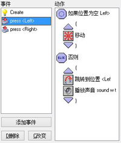
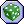
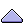
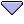
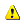
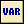

这里问的问题是：假如将实例移动到一个位置，那么在这个位置上实例是否不会与其他物体产生碰撞，如果是，实例会向指定的方向移动；如果不是，则会跳转到一个指定的位置。这里注意一下，块动作会让列表产生缩进，这样可以方便浏览，当你少用了开始块和结束块中的一个时也更容易被检查出来（特别是在你在块中使用块时）。
对于所有问题，有一个标记为非的复选框。如果选中此复选框，问题的结果将反转。也就是说，如果结果为真，会变成假，如果结果为假，会变为真。这允许您在问题不为真时执行某些动作
对于大多数问题，您可以指定它们应用于特定对象的所有实例。在这种情况下，仅当对象的所有实例都为真时，结果才为真。例如，您可以检查是否所有皮球的右方都是空的。
下面是与问题相关的动作（请注意，它们都有不同形状的图标和不同的背景颜色，以便它们可以更容易地与其他动作区分开来。）
如果位置为空
若当前的实例在指定位置不与物体产生碰撞，则问题的返回值“真”。你可以指出该位置为相对或绝对。你也可以指出碰撞的是只有考虑碰撞固态物体还是全部的物体，此动作通常用于检查物体实例是否可以移到一特殊的位置上而不和其它物体实例重叠或者碰撞。
如果位置存在物体
是上一个动作的相反版本。如果在指定的位置存在物体返回“真”（只能选择固体对象或全体对象）。
如果物体在位置上
若在指定的位置上存在一指定的某类物体，则其返回值为“真”。
如果物体的数量为某一数值
指定一物体和一数值，假如当前物体的实例数量等于指定数值时，则返回值为“真”。通常用来检查一个物体在房间上的实例数目是否为0，如果是，就结束当前关卡或者游戏。

指定骰子的面数然后抛出。然后如果骰子落在真的一面，则结果为真，并且执行下一个动作。
这可以用来在你的游戏中添加一些随机的元素。 例如，您每步都可以生成随机改变方向的炸弹。骰子面数越大，掷到为真的一面几率越小。实际上可以使用小数。例如，如果将面数设置为1.5，则有1/1.5的几率执行下一个操作。使用小于1的数字没有意义。
如果提出问题为真
你指定一个问题，一个对话框显示给玩家，上面有是和否的按钮，当玩家解答为是时此动作的结果是“真”。
如果表达式为真
这是最基本的问题动作，您可以输入任意表达式。如果表达式求值为“真”（即大于或等于0.5的数字），则执行下一个动作。有关表达式的更多信息，请参阅下文。
如果鼠标按下
如果按下指定的鼠标按钮，则返回“真”。一种标准的用法是把它放在歩事件，可以用来检查鼠标按钮是否被按下，如果是，可以执行下一个动作，例如将实例移动到鼠标的位置（使用“跳转到指定点”动作，值为mouse_x和mouse_y）。
如果实例对齐网格
假如实例的位置是在一网格上，则返回真。你可指定水平的和垂直的网格线距离。在某些特定的动作中是非常有用的，例如让实例仅在网格位置上时转弯。

指定动作块的开始位置。

指定动作块的结束位置。
否则
问题的结果为“假”时，执行else后面的内容。
重复执行下一个动作
此动作用于重复执行下一个动作或动作块多次，你只需要指定重复次数。
跳出当前事件
当遇到此动作时，会停止执行此事件中的后续动作。这通常在遇到问题后使用。 例如，当一个位置为空时的，我们不需要做任何事情，所以我们跳出当前事件， 当只有那个位置不为空时才接着执行下面的动作。
如果你想对游戏中发生的事情有更多的控制权，建议使用本文档第4部分中描述的内置编程语言，会比使用动作有更多的灵活性。下面还有一些动作可以来定义和测试变量，它们比代码更容易使用，对您的游戏来说也非常有用。下列动作与此相关：
执行代码
当你添加该动作的时候，会弹出一个窗体，你可以在上面写入要执行的代码。里面可以是一些函数的调用或者是零散的代码。这只用于使用些较简单的代码。如果是比较复杂的，建议您使用文档第2部分中描述的脚本

使用此动作可向动作列表中添加一行注释，该行以斜体字体显示。 添加注释可以帮助你记住你的活动正在做什么。 该操作不执行任何操作。 但要意识到它仍然是一个动作。 所以当你把它放在条件动作之后，它就是那个会被执行的动作（即使它不做任何事情）。
设定变量
游戏中有许多内置变量，用这个动作你可以改变它们的值，还可以创建自己的变量并给它们赋值。您可以指定变量的名称和新值，当您选中相对复选框时，该值将和变量的当前值相加，但这只能在变量已经赋值过的情况下才能完成。有关变量的更多信息，请参阅下文。
如果变量为某值
此动作用来检查特定变量的值。如果变量的值等于给定值，则返回“真”，否则返回“假”。您还可以检查变量值是否小于给定值或大于给定值。实际上，您也可以使用此动作来比较两个表达式的大小，有关变量的更多信息，请参阅下文。

绘制变量